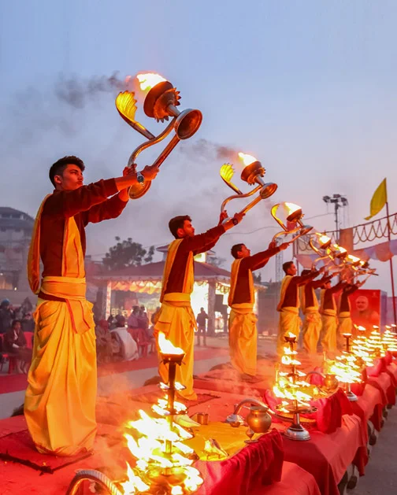

“The World is a book and those who do not Travel read only one page.”
~ Saint Augustine
About Incredible India:

Interesting and Intriguing, India offers incredible holiday experiences through its cultural, topography, and wildlife diversity. With these amazing and unique experiences, this south Asian country conveniently finds its way into the world tourism map as one of the finest destinations for a holistic vacation.
India establishes its identity as the country of architectural masterpieces, making it an ideal travel destination to plan a heritage tour in the world. While Taj Mahal makes for the major draw on an India tour, there are a plethora of monuments and edifices in every India travel guide displaying the fine architecture and grandiose of different eras in the country.
The diverse Indian topography adorned with the impressive Himalayas; long stretches of coastline; expansive hot, cold and white salt deserts; dense forests; alpine meadows and lakes; and scenic waterfalls pique the tourists’ interest.
Along with the best nature sightseeing tours, India offers an opportunity to visitors to have a little adventure of their own. The numerous spell-binding and less-trodden trails give trekking tour opportunities in South Asia unlike any other.
India Tours offers a chance to explore its biodiversity in the country's many national parks and wildlife reserves. An enthralling experience entails in the India wildlife tour packages that take tourists to the habitats of Royal Bengal Tigers, one-horned rhinos, and snow leopards amongst many rare, endangered, and unique species of flora and fauna.
<
All Rights Reserved®Copyright© Jai✌
Session-2020-21(Covid)